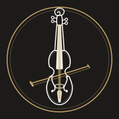

Antes de imprimir: revisa el número de WhatsApp si cambia. Cada tarjeta es 85×55mm
(tamaño estándar UE) — la línea de puntos es guía de corte, no se imprime en
@media print. Para imprimir en casa: cartulina, Ctrl/Cmd+P → tamaño
real (100%), sin ajustar a página, y recorta por la línea. Para imprenta (Vistaprint y
similares), sube esta misma plantilla como referencia — ellos añaden el sangrado.

Manuel
Viola en directo
Granada
Viola en directo
para ceremonias de boda
violagranada.es
+34 858 886 795
viola.granada